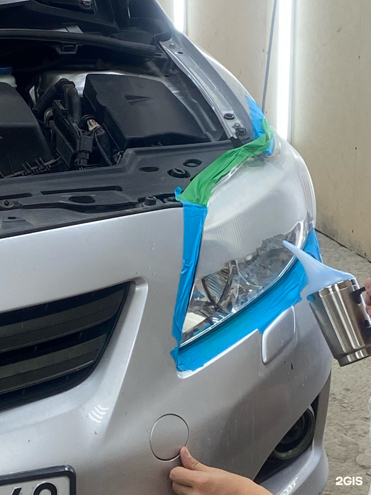

НАШИ РАБОТЫ
Полировка и шлифовка автомобильных стёкол
18.02.2026
Убрали мутность и мелкие царапины с бокового стекла — вернули прозрачность без замены.

Стёкла со временем теряют блеск: налёт, микроцарапины от щёток и мойки делают стекло «мутным». На этом автомобиле клиент жаловался на заметную помутнённость бокового стекла.
После осмотра согласовали шлифовку и полировку. Сняли тонкий слой дефектов, затем отполировали поверхность до ровной прозрачности.
Итог — стекло снова чистое визуально, без необходимости менять элемент. Рекомендовали бережный уход и антидождь по желанию.